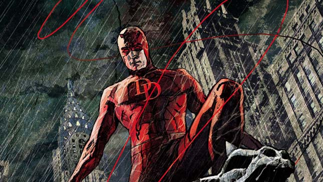
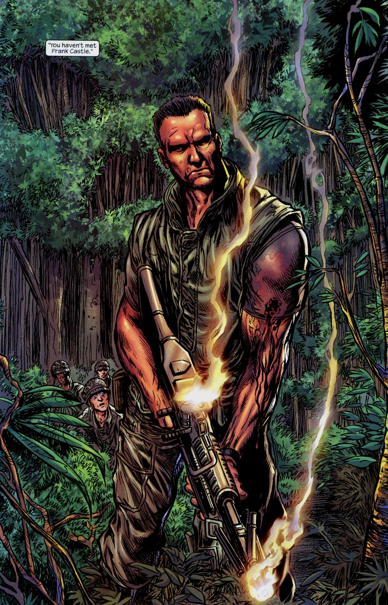
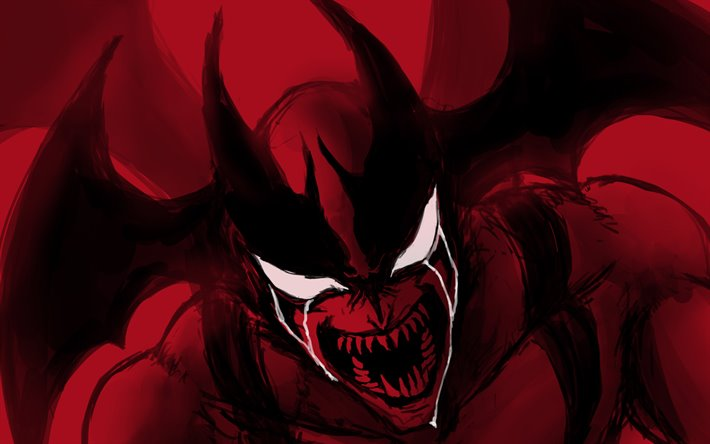
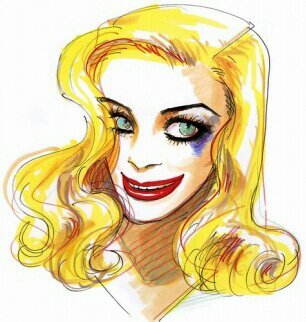
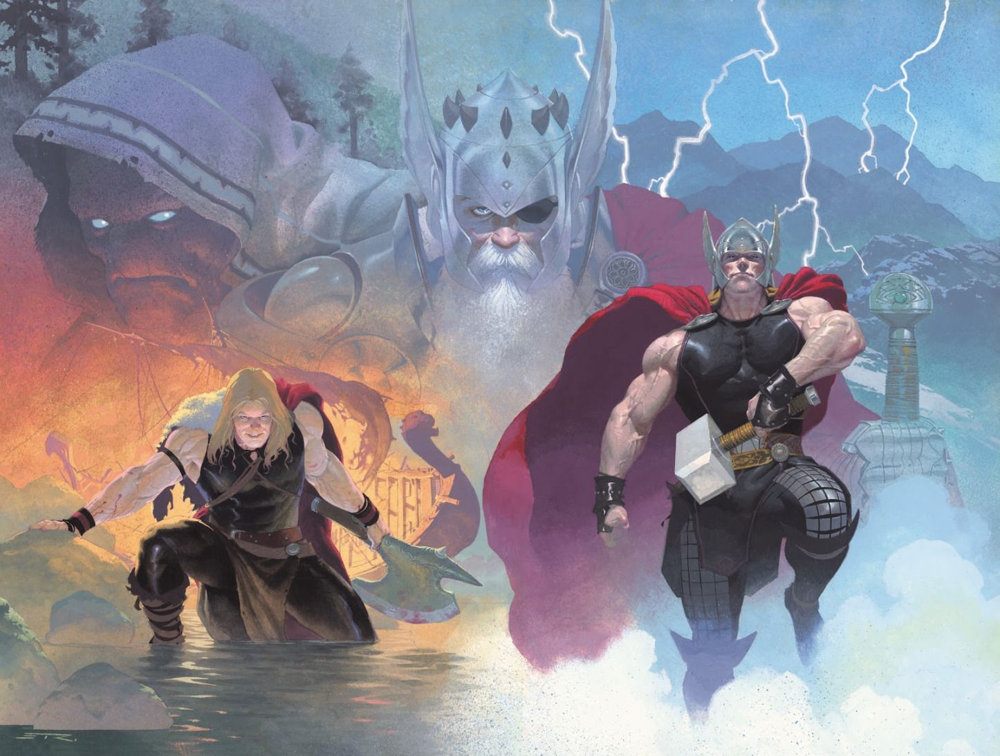
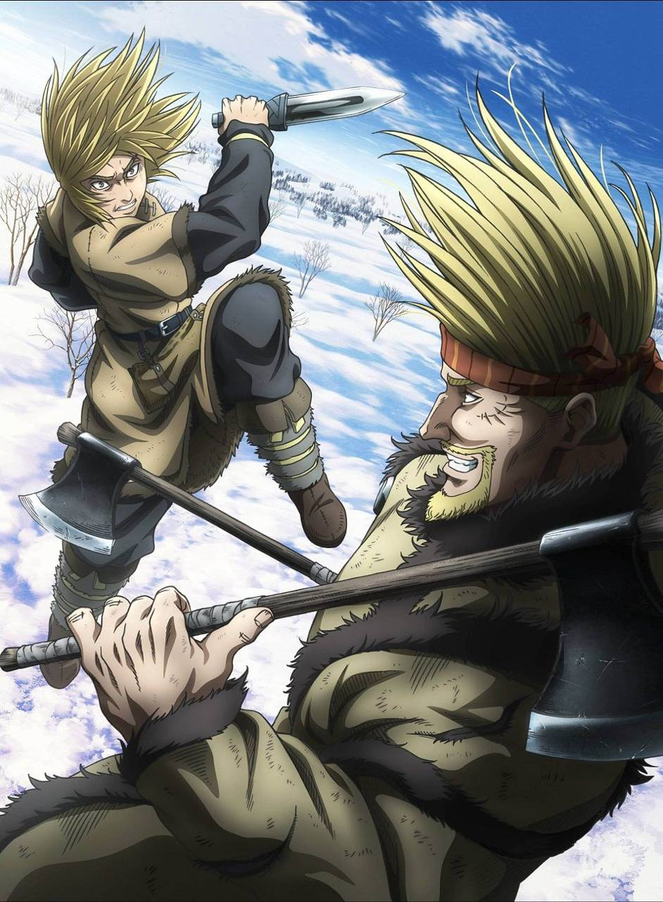
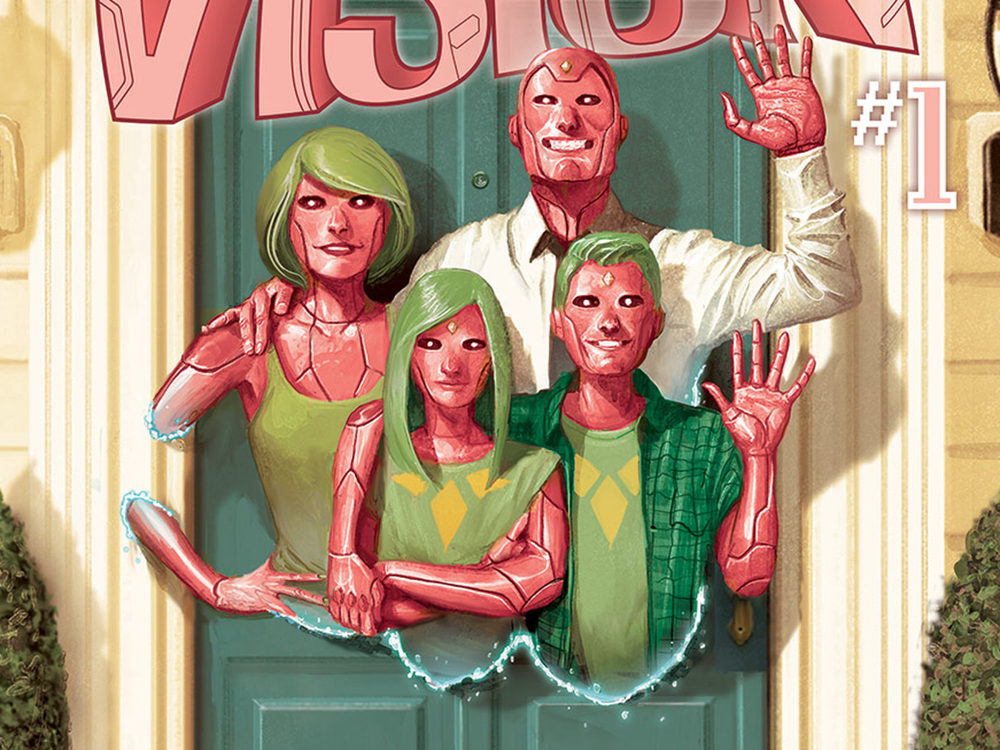

A história se passa em um mundo com animais civilizados e completamente antropomórficos com uma dívida cultural entre carnívoros e herbívoros. A série toma seu nome da classificação instituída de Beastars, um indivíduo dotado de talento enorme, serviço e notoriedade. Legoshi, um grande lobo cinzento, é um estudante tímido e quieto da Escola Cherryton, onde vive em um dormitório com muitos outros estudantes carnívoros, incluindo seu amigo labrador extrovertido, Jack.
Como um dos membros do clube de teatro da escola, Legoshi trabalha como assistente de palco e ajuda os atores do clube encabeçado pelo estrela em ascensão Louis, um veado-vermelho. Inesperadamente, Tem, a alpaca, é brutalmente assassinado e devorado na noite, espalhando uma onda de desconforto e desconfiança entre os estudantes carnívoros e herbívoros.
Ao mesmo tempo, Legoshi tem um fatídico encontro com Haru, uma pequena coelha anã, e começa a desenvolver sentimentos complexos por ela.

Demolidor é um dos personagens Marvel com uma das melhores médias de boas histórias. Brian Michael Bendis fez um ótimo trabalho quando assumiu o personagem, se inspirando muito nos arcos sombrios das histórias que Frank Miller escreveu do personagem. Bendis foi substituído por Ed Brubaker que deu prosseguimento com muita competência.

A décima edição da ótima Marvel Max chegou ontem às bancas brasileiras trazendo uma aguardada novidade. A revista iniciou a publicação da minissérie Nascido para matar, que conta como foi a participação de Frank Castle, o futuro Justiceiro, durante a Guerra do Vietnã.
A história é contada por outro soldado do campo onde Castle é capitão, na fronteira com o Camboja. Enquanto o rapaz fica apenas contando os dias para voltar para casa, Castle é apresentando como um homem que nasceu para a guerra. Na primeira edição, quando um general visita o campo para desativá-lo, ele mostra até que ponto quer chegar para manter a guerra a seu modo.

Na trama, Akira Fudo era um estudante tímido que gostava de frequentar a biblioteca, mas jamais poderia imaginar que a sua vida viraria de ponta-cabeça quando o seu melhor amigo, Ryo Asuka, o procurou para contar-lhe sobre a verdade do mundo: demônios da antiguidade estão disfarçados entre humanos e planejam nos dizimar para reconquistar o controle do planeta Terra.
A solução proposta por Ryo? Os dois amigos também se transformarem em demônios poderosos para salvarem a humanidade. Então, Akira, depois de muita relutância, aceita a proposta de seu amigo e se funde ao poderoso demônio Amon. Este é o nascimento do lendário Devilman!

Lilico (Nossa protagonista) é considerada a beleza em pessoa. É modelo, atriz e cantora. Em todos os lugares por onde passa, Lilico chama atenção.É perfeita e sempre jovial. Enquanto dá entrevistas, diz que o segredo de sua beleza é apenas manter um estilo de vida saudável.
Mas Lilico é artificial. Todo o seu corpo foi resultado de intensas cirurgias plásticas. Por esse motivo ela começa a sentir vários efeitos colaterais resultantes dessas modificações, que vão desde feridas na pele até alucinações.
As coisas começam a piorar quando a clínica onde tratou é investigada sob suspeita de uso clandestino de fetos para pesquisas e tratamentos ilegais. E também quando uma outra modelo entra na agência onde trabalha, causando ira em Lilico pelo fato de ser jovem e bonita sem ter recorrido a nenhuma cirurgia plástica.

Hunter × Hunter é uma série de mangá escrita e ilustrada por Yoshihiro Togashi. Os capítulos são serializados na revista Weekly Shōnen Jump desde 3 de março de 1998, onde são compilados e publicados em formato tankobon pela editora Shueisha, embora o mangá tenha frequentemente entrado em hiato desde 2006.

A narrativa começa em 1986, na Alemanha Ocidental, quando o jovem cirurgião Kenzo Tenma vai contra as ordens de seus superiores e, ao invés de operar o prefeito da cidade, salva um garoto baleado. O que o médico não poderia imaginar é que manter o menino vivo desencadearia no fim de sua carreira, além de diversas mortes as quais ele é tido como suspeito. Nove anos depois, o caso ressurge e faz com que Tenma passe a investigar a verdade por trás dos crimes os quais foi acusado.
Quanto ao vilão, Johan, não é possível falar muito sem estragar a história. Basta dizer que ele é extremamente racional e, ao planejar todos os seus atos, representa o “mal” natural, aquele intrínseco à pessoa, sem precisar de um porquê para existir.
Monster traz personagens complexos envoltos em uma narrativa muito bem desenvolvida, com diferentes discussões sobre culpa, responsabilidade, ética e valores.

Por todas as eras, deuses estão desaparecendo, seus adoradores mortais deixados no caos. A única esperança desses mundos arruinados é que Thor desvende o sinistro mistério do Carniceiro dos Deuses! No passado distante, o Deus do Trovão descobre uma caverna esquecida que ressoa com os gritos de deuses torturados – e fica chocado em se descobrir entre eles!
No presente, Thor segue a trilha sangrenta de deuses assassinados nas profundezas do espaço. E milhares de anos no futuro, o último deus-rei de uma Asgard arruinada trava sua derradeira batalha contra as legiões enlouquecidas do Carniceiro dos Deuses. Enquanto três Thors de três eras correm para deter o Carniceiro, a extensão total de seu terrível esquema assume uma forma aterrorizante! Iniciando o elogiado arco "O Carniceiro dos Deuses", que foi escrito por Jason Aaron e desenhado pelo inigualável Esad Ribic.

Quando criança, Thorfinn se sentou aos pés do grande Leif Ericson e se emocionou ao ouvir contos selvagens de uma terra distante ao oeste. Mas suas fantasias juvenis foram destruídas por um ataque inesperado de um mercenário.
Criado pelos vikings que foram responsáveis pelo assassinato de seu pai, Thorfinn se tornou um guerreiro assustador com o objetivo de matar o líder Askeladd para ter sua vingança. Por meio de superações, Thorfinn continua o sonho de viver em uma terra fértil no oeste, uma terra sem guerra ou escravidão… a terra que Leif chamava de Vinland.

O Visão quer ser humano. E o que é mais humano do que formar uma família? Para tal, ele retorna ao laboratório onde Ultron o criou e o moldou para ser uma arma. O lugar onde ele se rebelou pela primeira vez contra seu destino, imaginando que poderia ser mais do que aquilo – que poderia ser um homem. Então, ele os construiu. Uma esposa, Virgínia. Dois gêmeos adolescentes, Viv e Vin. Todos herdaram sua aparência.
Seus poderes. E compartilham de sua grande ambição (ou seria uma obsessão?): a necessidade incessante de ser normal. Eles são a família da casa ao lado, e têm poder para matar todos nós. O que poderia dar errado?